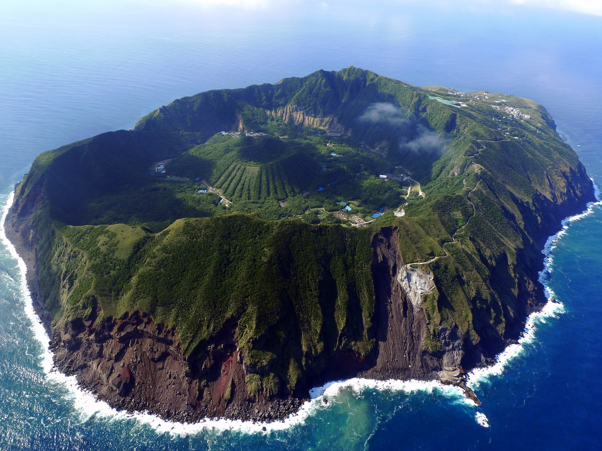

Tanati

Taniti is a small, tropical island in the Pacific. While the island
has an area of less than 500 square miles, the terrain is varied and
includes both sandy and rocky beaches, a small but safe harbor, lush
tropical rainforests, and a mountainous interior that includes a small,
active volcano. Taniti has an indigenous population of about 20,000.
Until a recent increase in tourism, most the Tanitian economy was
dominated by fishing or agriculture.
The island enjoys a hot, tropical climate all year round with
average highs of about (81°F). There are variations across the
region, the best time to visit the island is during its driest months
which are usually from February to May, while July to November is the
wettest period. Basicly the weather is awesome YEAR ROUND:).